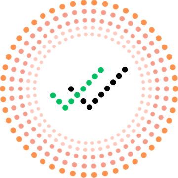

openweekPrivacy Policy
Last updated November 12, 2026
Draft, still being reviewed by a lawyer.
OpenWeek is a shared organizer for a household. This policy says what we keep, why, who else handles it, and what you can do about it. The short version: we keep what you add so your household can use it, we don’t sell it, and nothing goes to advertisers.
What we keep
- Your account: your name, generated avatar, color, email address, time zone, and which sign-ins you use. We don’t have passwords, because there aren’t any.
- What you add: tasks, lists, recipes, appointments and their places and notes, your home’s rooms, and names and birthdates of kids and pets. If you’re expecting, the due date and birth date.
- What happens in the app: who finished what and when, who holds which part of the household’s work, check-ins, streaks, and points if your home turns them on.
- Your phone’s push token, so we can send the notifications you’ve left on, and the words of each one we send you for two weeks, so you can see it again in the app. Only you can see yours, and after two weeks the words are deleted.
- Crash reports, with task titles, notes, names and places scrubbed out.
We don’t ask for your location, and there are no photo uploads. Avatars are generated, not pictures of you.
Your phone’s calendar
Calendar sync runs on your phone. No calendar account or password reaches us. If you choose to bring a calendar in, the events from it become appointments your household can see, and those are stored with us. If you add a team’s or school’s calendar link, our servers read that link to keep the schedule up to date.
Who can see what you add
The people in your home, by what each can see. Owners and adults see the household. Caregivers and guests see only the areas and lists they’ve been given. Money, Health, Us, pregnancy details and the view of who carries what are adults only. Just me tasks are only yours. On the lock screen, notifications from sensitive areas stay generic unless you turn on full details.
Why we use it
To run the app: show your household its tasks, send the reminders you asked for, keep phones in step, and fix what breaks. We don’t use what you add for advertising, and we don’t sell it.
Who else handles it
These companies process data for us, only to run the service:
- Supabase: our database, sign-in, and server functions.
- Expo, Apple and Google: delivering push notifications.
- Apple and Google: signing in, if you use them.
- Sentry: crash reports, scrubbed as described above.
- Zippopotam and the US National Weather Service: if an adult adds a zip code for weather warnings, we look up that zip’s rough location once, and check that point for warnings every two hours. Nothing else about your home or anyone in it is sent.
- Anthropic: when you type into the Add bar, our server sends that line and today’s date to Anthropic’s Claude so it can work out the tasks in it. Before it goes, every person’s, kid’s and pet’s name in it is replaced with a placeholder. Nothing else about your home, tasks or notes is sent, and nothing is saved until you add it. Anthropic handles it under its commercial terms.
- The mic: when you say a task into the Add bar, your iPhone turns it into text on the phone itself. No recording is kept or sent anywhere; only the words, as if you had typed them, are used the same way as typing.
If you paste a recipe link, our server reads that page to import it. We may share information if the law requires it.
Consumer health data
OpenWeek isn’t a healthcare provider or a health plan, but some of what you add may be health information under laws such as Washington’s My Health My Data Act and similar laws in Nevada and Connecticut. That can include appointments, prescriptions, medicine reminders, and pregnancy and newborn checkpoints.
- What we collect: only what you and your household type in.
- Why: to show it to you and the adults in your home and remind you about it.
- Who we share it with: the companies above, only to run the service. We don’t sell it.
- Your rights: you can see it, export it, delete it, and withdraw consent by deleting it or your account. You can appeal a decision by emailing us, and you can complain to your state’s attorney general.
Your choices
- A copy of your data: Settings, Privacy and data, Export my data.
- Deleting your account: Settings, Privacy and data, Delete account. Your name, sign-ins and settings go, along with your Just me tasks. In homes you were part of, what you did stays for the others, as “Former member”. A home only you were in goes too.
- Deleting a home: the owner can delete it, with everything in it, for everyone.
- Notifications: each kind can be turned off in Settings.
How long we keep it
As long as your account or home exists, until you delete it. After that it leaves our database right away, and our host’s backups age out on their own schedule.
Children
Accounts are for adults 18 and over. Kids never sign in. An adult may add a child’s name and birthdate so tasks can be for them. If you think someone under 18 has an account, tell us.
Changes and contact
If this policy changes in a way that matters, we’ll say so in the app. Questions or requests: support@openweek.app.